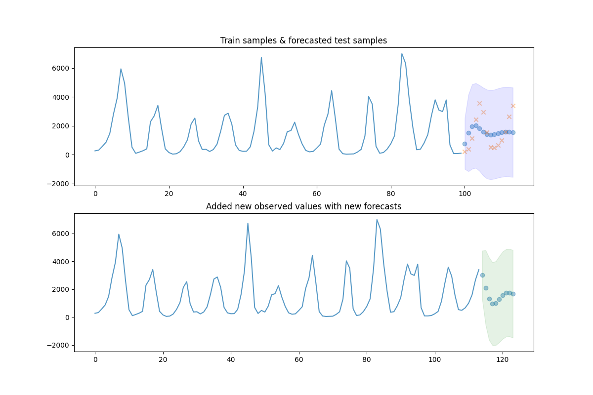

Adding new observations to your model¶
This example demonstrates how to add new ground truth observations to your model so that forecasting continues with respect to true, observed values. This also slightly updates the model parameters, taking several new steps from the existing model parameters.

print(__doc__)
# Author: Taylor Smith <taylor.smith@alkaline-ml.com>
import pmdarima as pm
from pmdarima import model_selection
import matplotlib.pyplot as plt
import numpy as np
# #############################################################################
# Load the data and split it into separate pieces
data = pm.datasets.load_lynx()
train, test = model_selection.train_test_split(data, train_size=100)
# #############################################################################
# Fit with some validation (cv) samples
arima = pm.auto_arima(train, start_p=1, start_q=1, d=0, max_p=5, max_q=5,
out_of_sample_size=10, suppress_warnings=True,
stepwise=True, error_action='ignore')
# Now plot the results and the forecast for the test set
preds, conf_int = arima.predict(n_periods=test.shape[0],
return_conf_int=True)
fig, axes = plt.subplots(2, 1, figsize=(12, 8))
x_axis = np.arange(train.shape[0] + preds.shape[0])
axes[0].plot(x_axis[:train.shape[0]], train, alpha=0.75)
axes[0].scatter(x_axis[train.shape[0]:], preds, alpha=0.4, marker='o')
axes[0].scatter(x_axis[train.shape[0]:], test, alpha=0.4, marker='x')
axes[0].fill_between(x_axis[-preds.shape[0]:], conf_int[:, 0], conf_int[:, 1],
alpha=0.1, color='b')
# fill the section where we "held out" samples in our model fit
axes[0].set_title("Train samples & forecasted test samples")
# Now add the actual samples to the model and create NEW forecasts
arima.update(test)
new_preds, new_conf_int = arima.predict(n_periods=10, return_conf_int=True)
new_x_axis = np.arange(data.shape[0] + 10)
axes[1].plot(new_x_axis[:data.shape[0]], data, alpha=0.75)
axes[1].scatter(new_x_axis[data.shape[0]:], new_preds, alpha=0.4, marker='o')
axes[1].fill_between(new_x_axis[-new_preds.shape[0]:],
new_conf_int[:, 0],
new_conf_int[:, 1],
alpha=0.1, color='g')
axes[1].set_title("Added new observed values with new forecasts")
plt.show()
Total running time of the script: ( 0 minutes 0.589 seconds)